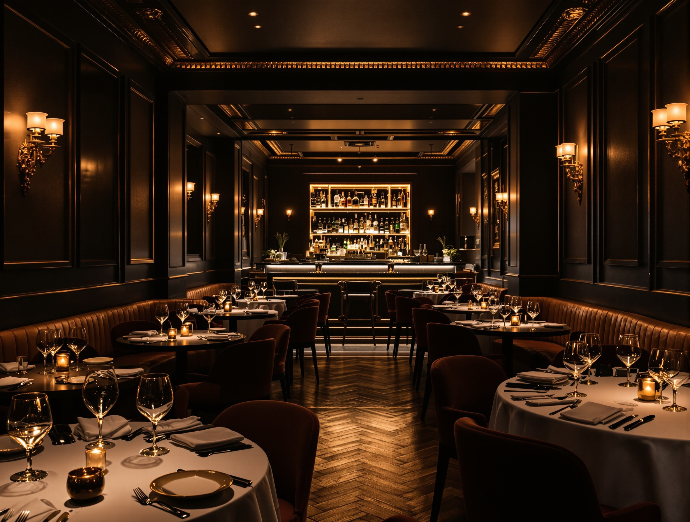
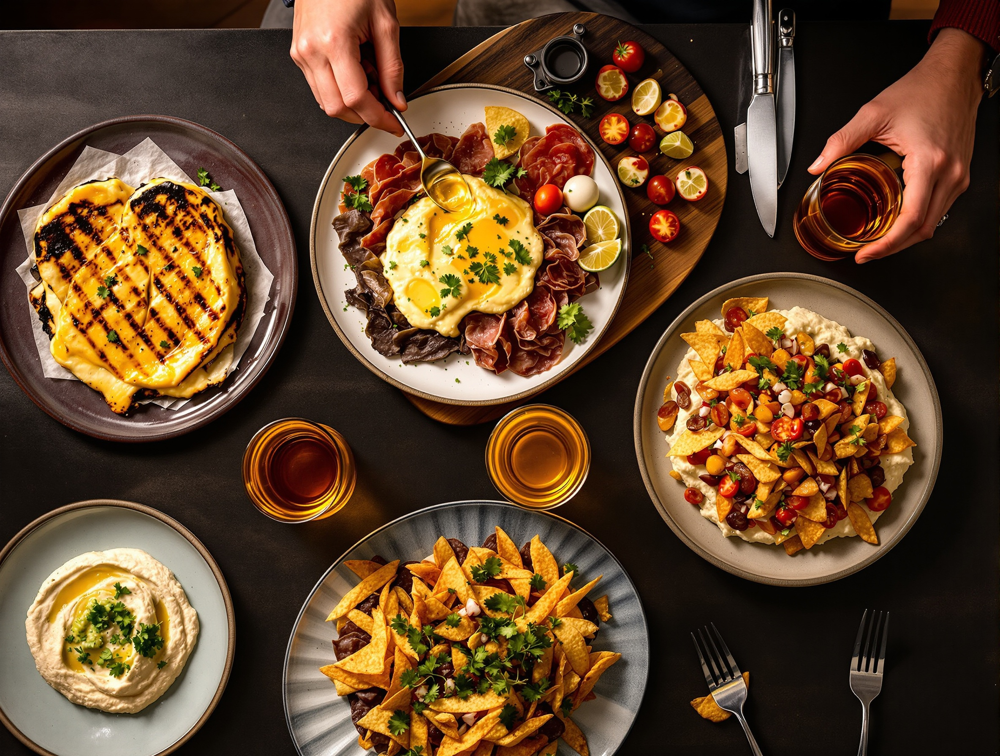
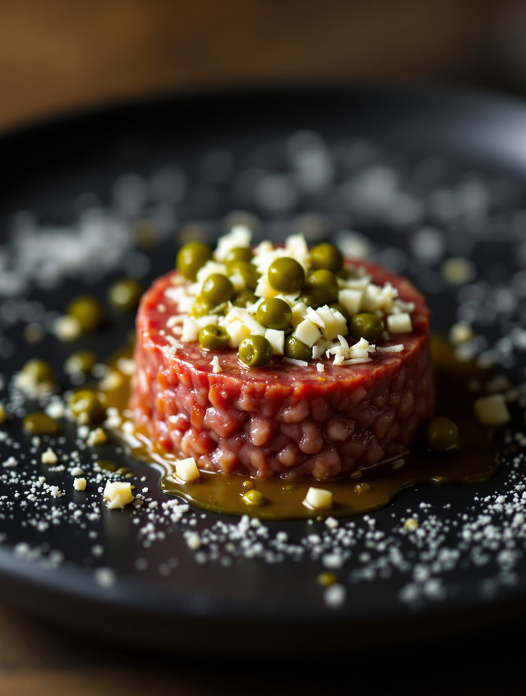
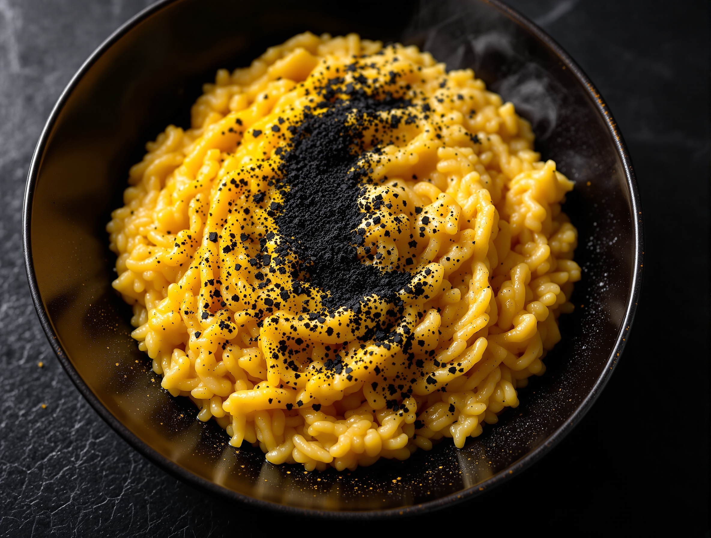
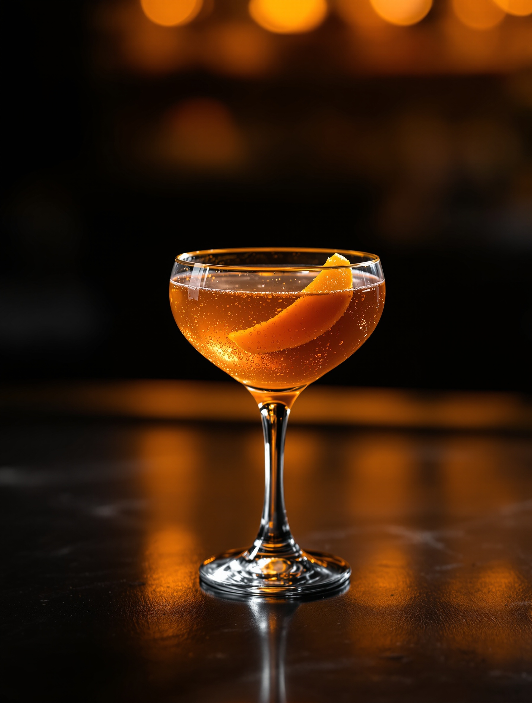

Struncatura “Circle”
Olive taggiasche, pomodoro secco e capperi di Pantelleria.
Cucina & cocktail · Via Padova, Milano
Eat, drink, party and repeat.
It’s a circle.
Prenoti in un attimo, al telefono: +39 324 5685703
01 Il concept
Da noi la serata non cambia indirizzo. Si comincia con l’aperitivo, si continua con una cena impiattata come si deve, si finisce con un cocktail e una serata a tema. Tutto nella stessa stanza.
È il nostro modo di stare a Milano: cucina ricercata dove di solito si va solo a bere. Un posto che gira e torna sempre al punto di partenza — il tavolo con gli amici.

02 La cucina
Niente di generico. Materie scelte, impiattate con cura, pensate per condividere e per far durare la serata. Ecco cosa esce dalla nostra cucina.
Olive taggiasche, pomodoro secco e capperi di Pantelleria.
Battuta al coltello, capperi di Pantelleria e formaggio fresco.
Scaglie di sale Maldon e un filo di miele.
Cotta a lungo, finita in padella fino alla crosta.
Con pomodoro, cipolla di Tropea e freschezza di agrumi.



03 Il piatto simbolo
Un risotto allo zafferano, spolverato di liquirizia in polvere. L’oro giallo dello zafferano incontra il nero della liquirizia: è il piatto che dà il nome ai nostri colori, e il motivo per cui questa sala respira attorno a un solo, grande cerchio.
Un piatto solo, tutto lo spazio che merita.
04 Il bancone
Quando la cucina rallenta, il bancone accende la serata. Miscelati al momento, aperitivo curato, e la stessa luce calda su ogni bicchiere.

05 Eventi & nights
Le nostre serate a tema sono il motivo per cui si torna. Dopo cena la sala cambia ritmo: musica, bancone acceso, la stessa gente attorno al cerchio.
Un appuntamento che cambia pelle: la sala si veste per la nottata.
Si resta seduti, si passa ai cocktail, la serata continua da sola.
Compleanni e gruppi: prenotate la sala, ci pensiamo noi. Chiamateci.
06 La tavola
Un posto dove si mangia davvero bene e la serata non si ferma. La prenotazione è semplice: una telefonata e il tavolo è vostro.
07 Dove siamo
Via Padova, 228
20132 Milano · zona NoLo